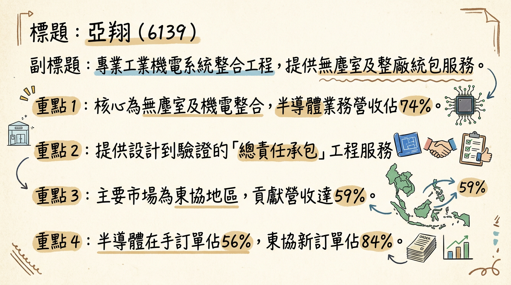
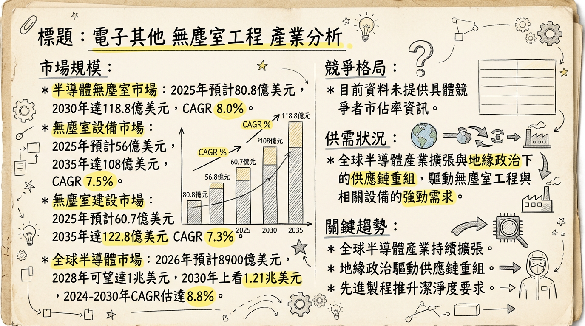
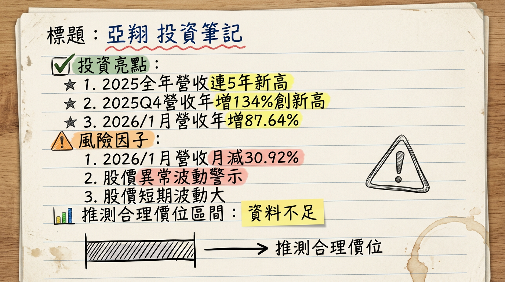

6139 亞翔 深度研究報告
一句話摘要
亞翔 (6139) 受惠於AI應用帶動的全球半導體擴廠潮與供應鏈重組，在手訂單與新簽約金額屢創歷史新高，特別聚焦東協（新加坡）與台灣高科技廠房工程市場，法人預期2026年EPS有望挑戰逾30元，營運規模與獲利能力皆具強勁成長動能，為AI時代下的關鍵基礎建設受惠者。
公司概覽
亞翔工程股份有限公司（6139）為專業工業機電系統整合工程商，提供生化無菌室、電子業無塵室及相關機電製程管線的設計與建造。其核心產品與服務涵蓋無塵室工程、機電系統整合以及整廠統包工程，擅長提供從設計、採購、施工、測試到驗證的「總責任承包」（TURN-KEY）系統整體工程服務。服務範疇廣泛，應用於半導體、光電、生化製藥、醫療院所、商業大樓、住宅、化工廠、太陽能等領域。
營收結構 (2025年前11月)
| 項目 | 佔比 (%) | 備註 |
|---|
| 依產業別 | | |
| 半導體產業 | 74% | 主要業務來源 |
| 其他 | 26% | 鐵路、公路、捷運、能源、生醫製藥等 |
| 依地區別 | | |
| 東協地區 | 59% | 其中新加坡為集團海外業務重點佈局區域 |
| 台灣 | 34% | |
| 中國大陸 | 7% | |
：東協地區佔84%為最大宗，其次為台灣。
在建工程合約金額區域分佈 (截至2025年11月底)：東協佔50%、台灣佔48%。
核心競爭優勢
總責任承包 (TURN-KEY) 解決方案能力： 亞翔具備從設計、採購、施工、測試到驗證的全方位工程統包能力，能有效整合複雜的高科技廠房建置流程，減少客戶管理負擔。
深耕半導體與高科技產業： 亞翔在高潔淨度無塵室及先進機電系統整合領域經驗豐富，是台積電CoWoS/SoIC等先進封裝擴產及新加坡、美光等大型訂單的重要合作夥伴，直接受惠於AI驅動的半導體擴廠需求。
海外市場拓展能力： 以新加坡為核心據點，成功拓展東協市場，2025年前11月東協貢獻營收佔比達59%，新簽約訂單區域比重更高達84%，顯示其海外營運能力與成長潛力。
在手訂單創歷史新高： 截至2025年11月底，在手訂單高達1,753.61億元，且其中97%來自半導體建廠工程，提供未來2-3年穩定的營收能見度與成長基礎。
財務分析
月營收趨勢
| 月份 | 金額 (億元) | 月增率 MoM (%) | 年增率 YoY (%) |
|---|
| 2026年01月 | 65.63 | -30.92 | +87.64 |
| 2025年12月 | 95.01 | +11.66 | +165.15 |
| 2025年11月 | 85.09 | +20.35 | +169.57 |
| 2025年10月 | 70.70 | -29.96 | +77.01 |
| 2025年09月 | 100.94 | +29.80 | +79.91 |
| 2025年08月 | 77.77 | +15.48 | +97.38 |
季度營運數據
* 季營收：約151.16億元 (累計前三季516.23億元 - 前兩季365.07億元)
* 毛利率：18.01% (創近19年新高)
* 營業利益率：15.34% (創近19年新高)
* EPS：10.64 元 (單季)
* 季營收：107.18 億元
* 毛利率：21.59%
* 營業利益率：17.12%
* EPS：5.68 元
全年度營收與 EPS
* 全年營收：767.39 億元，年增 18.08% (創歷史新高)
* EPS：累計至2025年第三季為17.33元。市場推估2025年全年EPS有望超過20元 (兩個股本)。
* 全年營收：650.89 億元，年增 14.38%
* EPS：18.73 元
法說會重點
法說會日期：2025年12月
管理層具體 Guidance 與發言重點：
- 在手訂單與新簽訂單：截至2025年11月底，在手訂單高達2,084億元，創歷史新高。2025年前11月新簽約訂單金額達1,121億元，創近五年新高。其中，半導體產業佔比97%。
- 區域營運重點：營運重心顯著轉向東協市場，該區域營收佔比達59%（法說會內容），新接訂單東協佔比達84%。強調台灣與新加坡將成為未來主要成長動能，主要挹注來自新加坡VSMC建廠專案、台積電高雄2奈米廠管線工程以及美光HBM廠專案。
- 中國大陸市場：對蘇州亞翔展望維持保守看待，成都翔生及越南市場持平。
- 獲利率展望：管理層指出，在AI驅動半導體製造鏈建廠需求熱絡下，未來幾年利潤率很有機會因需求大於供給而持續提升。
- 2026年展望：管理層對2026年營運展望保持樂觀，尤其看好新加坡市場，但坦言工程管理人才短缺是目前營運的最大挑戰。
- 人才策略：為應對人才短缺，已設立東南亞專班招收學生來台就學與就業，以強化長期人力資源。
產能利用率與資本支出：法說會中未具體說明2025-2026年公司自身的產能利用率及資本支出金額，但強調人才短缺是限制接單能力的主要瓶頸。
券商觀點
| 券商 | 目標價 (元) | 評等 | 日期 |
|---|
| 本土投顧 | 700 | 買進 | 2025年12月30日 |
| 中信投顧 | 655 | 增加持股 | 2025年12月30日 |
- 市場推估：2025年EPS有望賺超過20元（兩個股本）。
- 市場推估：2026年EPS可望挑戰賺超過30元（三個股本）。
- 目前未找到具名券商對2025-2026年EPS的具體預估數字。
近期評等調升/調降：
- 中信投顧：給予「增加持股」投資評等 (2025年12月30日)。
財報深度分析
利潤率趨勢
| 季度 | 毛利率 (%) | 營業利益率 (%) | 稅後淨利率 (%) |
|---|
| 2025 Q3 | 18.01 | 15.34 | 12.69 |
| 2025 Q2 | 9.65 | 7.07 | 5.88 |
| 2025 Q1 | 11.90 | 9.43 | 8.72 |
| 2024 Q4 | 21.60 | 17.12 | 15.29 |
| 2024 Q3 | 11.67 | 10.81 | 8.87 |
| 2024 Q2 | 10.84 | 8.33 | 7.21 |
| 2024 Q1 | 9.68 | 7.57 | 6.13 |
亞翔在2025年第三季的毛利率與營業利益率創近19年新高，主要歸因於龐大的在手訂單進入施工高峰期，特別是高毛利的半導體廠務工程專案認列進度順暢。全球供應鏈南移趨勢及新加坡強勁的擴產需求，也提升了專案議價空間。管理層預期在需求大於供給的環境下，未來幾年的利潤率有機會持續提升。
存貨與營運週轉
| 季度 | 存貨金額 (億元) | 存貨週轉天數 (天) | 應收帳款週轉天數 (天) |
|---|
| 2025 Q3 | 67.93 | 43.19 | 46.21 |
| 2025 Q2 | 50.84 | 41.52 | 36.63 |
| 2025 Q1 | 45.74 | 38.64 | 33.72 |
| 2024 Q4 | 40.75 | 40.67 | 35.84 |
亞翔存貨金額自2024年第四季至2025年第三季呈現持續增加，存貨週轉天數波動但維持穩定。這反映公司為執行其高達1,753.61億元的在手訂單而進行的正常備料，以確保大型工程項目的進度。由於其業務性質為工程承攬，備料增加通常與業務量擴大和專案推進的強度正相關，無異常堆積現象。
應收帳款週轉天數： 2025年第三季應收帳款週轉天數略有上升，可能與大型專案款項的認列和收款週期有關。
資本支出與負債
資本支出與產能：
- 未找到2025-2026年亞翔自身具體的資本支出金額、新增產能或折舊攤銷趨勢。
- 然而，台積電等客戶預計2026年將有10座晶圓廠建置或擴建，整體資本支出上看500億美元，年增21.9%。其中70%用於先進製程，這強勁的客戶資本支出直接驅動了亞翔的工程承接量與營運成長。
負債比率：
- 2025 Q3: 77.08%
- 2025 Q2: 76.54%
- 2025 Q1: 77.47%
- 2024 Q4: 75.31%
亞翔的負債比率維持在75%至77%區間，在資本密集型的工程營造產業中屬常見。未找到2025-2026年淨負債/EBITDA資料。
股權異動
- 董監事/大股東申報轉讓紀錄： 未找到2025-2026年的最新紀錄。
- 庫藏股買回紀錄： 未找到2025-2026年的最新紀錄。
- 可轉換公司債（CB）發行： 未找到2025-2026年的最新發行紀錄。
- 現金增資或減資計畫： 未找到2025-2026年的最新計畫。
股利政策：
- 2024年盈餘擬配發每股現金股利14元（已於2025年9月4日發放13.885元），創歷年新高。
- 配發率提升至74.75%。以2025年4月28日收盤價227.5元計算，現金殖利率達6.15%。
- 亞翔近三年現金股利配發率約七成，預計未來將維持相近水準。
產業分析
市場規模與成長趨勢
與亞翔業務高度相關的無塵室及半導體製造設備市場預計將持續成長：
- 半導體無塵室市場： 預計2025年達80.8億美元，2030年成長至118.8億美元，複合年增長率（CAGR）為8.0%。
- 無塵室設備市場： 預計2025年為56億美元，2035年成長至108億美元，CAGR為7.5%。
- 無塵室建設市場： 預計2025年為60.7億美元，2035年擴大至122.8億美元，CAGR為7.3%。
- 全球半導體市場： IDC預測2026年將達8900億美元，年增11%，2028年達1兆美元，2030年上看1.21兆美元，2024-2030年CAGR估達8.8%。Omdia預計2026年營收有望突破1兆美元。
供需狀況：
- 先進製程產能： AI驅動下，3奈米以下先進製程產能預計2026年將成長逾4成，年增率連續4年達逾4成。
- 先進封裝產能： 台積電CoWoS產能預計2026年擴增至110萬片，但仍供不應求；IDC預計2025年CoWoS產能年增113%，2026年再增72%，需求持續強勁。
- 成熟製程產能： 2025年下半年受惠關稅避險與備貨，產能利用率回穩；2026年受AI資料中心對矽光子、矽鍺等高速傳輸晶片及高效能PMIC需求強勁，平均產能利用率將穩定維持80%以上。中國晶圓廠利用率預計保持90%以上。
- 新晶圓廠興建： SEMI指出，2025年將有18座新晶圓廠啟建，大部分預計2026-2027年運營量產。
產業平均毛利率水準：
- 半導體製造業龍頭台積電長期毛利率目標在53-56%以上。
- 廠務工程業雖無直接平均數據，但投顧法人分析，考量海外廠受惠經驗累積及專業分工化，廠務概念股的毛利率將逐步靠攏台廠，有利於供應商維持一定獲利水準。
競爭格局
台灣廠務工程同業比較 (截至2025年前11月)
| 公司 (代碼) | 2025年Q3 EPS (元) | 2025年前11月營收 (億元) | 在手訂單 (億元) | 其他亮點 |
|---|
| 亞翔 (6139) | 10.64 | 672.37 | 2084.9 (截至2025/11) | 在手訂單與EPS預估領先同業，新加坡市場表現強勁 |
| 漢唐 (2404) | N/A | 394.01 | 1322.66 (截至2025/05) | 2025年營收有望創新高 |
| 聖暉 (5536) | N/A | 391.13 | 460+ (截至2025/05) | 2025年營收與獲利均創歷年新高 (2025全年營收414.8億) |
| 洋基工程(6691) | N/A | 120.32 | 406.71 (維持高檔) | |
從上述數據來看，亞翔在手訂單金額與EPS預估表現均處於領先地位，顯示其在產業中的強勁競爭力。
產業趨勢與亞翔機會/威脅
關鍵技術趨勢：先進製程與高潔淨度需求提升
* 具體影響： 隨著半導體晶片製程微縮至3奈米、2奈米，EUV光刻等先進工藝對無塵室潔淨度要求指數級提升。這推動了無塵室HVAC、FFU、管道系統等基礎設施的技術升級，確保良率。
* 對亞翔機會： 提供更高技術門檻、高附加價值的廠務工程服務，提升專案毛利率。
* 對亞翔威脅： 需持續投入研發與人才培訓以跟上技術演進，維持競爭力。
關鍵技術趨勢：AI與HPC驅動的廠務基礎設施升級
* 具體影響： AI晶片算力需求增長，帶動AI伺服器、資料中心與先進製程（CoWoS先進封裝）的投資。這不僅加速新晶圓廠建設，也促使現有廠房升級改造，對廠務工程業者意味著更複雜的機電系統整合需求，如液冷、矽光子等。
* 對亞翔機會： 直接受惠於半導體大廠擴廠潮，獲得大量高價值訂單，特別是與台積電先進製程擴產的緊密合作。
* 對亞翔威脅： 高度依賴半導體產業景氣循環，若AI需求或資本支出放緩可能受影響。
關鍵技術趨勢：供應鏈區域化與模組化、彈性化設計
* 具體影響： 地緣政治促使半導體供應鏈重組，各國政府推動半導體自主化，加速在北美、日本、歐洲等地新建晶圓廠。這推動了無塵室建設採用模組化和彈性化方案，以降低成本、加速部署。
* 對亞翔機會： 亞翔在東協市場的強勁佈局，特別是新加坡作為海外樞紐，使其能有效承接供應鏈移轉的訂單，並評估拓展美國市場。
* 對亞翔威脅： 進入新市場面臨當地法規、人力、工料成本高昂等挑戰，可能影響專案利潤。
相關投資題材：
- AI與HBM： 亞翔與AI題材緊密連結。AI晶片及HBM需求驅動半導體先進製程（3奈米、2奈米）和先進封裝（CoWoS）擴張，這些高科技廠房的建造與升級是亞翔的核心業務。台積電等為滿足AI需求而加速擴廠，直接惠及亞翔。
- 電動車： 電動車對半導體（尤其成熟製程車用晶片）需求增長。若半導體廠為生產車用晶片而擴建或升級，亞翔也能間接受益。
近期催化劑
利多催化劑：
- 2026年02月12日： 1月營收65.63億元，較去年同期大幅增加87.64%，顯示工程進入施工高峰期。
- 2026年01月28日： 2025年12月營收95.01億元，創歷史次高；2025年第四季營收250.8億元、全年營收767.38億元，均創歷史新高，年增18.08%。
- 2026年01月11日： 截至2025年前11月，新簽約訂單1,120～1,121億元，在手工程合約餘額1,753億元，其中約982億元預期在2年內轉為營收，營收能見度高。
- 2025年12月31日： 本土投顧看好亞翔2025-2027年EPS分別為27.16元、38.37元及47.61元，給予「增加持股」評等及目標價655元。
- 2025年12月30日： 法人看好半導體擴廠帶動訂單能見度，2026年獲利率續揚，給予700元目標價。
- 2025年12月29日： 法說會說明在手訂單達1,753.61億元創新高，其中東協與台灣佔比近98%，半導體建廠工程佔97%，顯示AI帶動先進製程擴建需求強勁。
- 2025年12月16日： 切入美光土建、無塵室與機電統包，2025年、2026年獲利可望續創新高。
- 2025年12月16日： 台積電預計2026年將有10座晶圓廠建置或擴建，整體資本支出上看500億美元，年增21.9%，其中70%用於先進製程，亞翔直接受惠。
- 2025年09月04日： 亞翔發放現金股利13.885元，股利政策穩健。
利空/風險事件：
- 2026年01月16日： 因股價異常波動發布公告，聲明無重大未揭露資訊，提示市場對股價過熱的風險。
- 2025年12月29日： 法說會後股價出現利多出盡走勢，早盤大跌逾7%。
- 2025年12月26日： 法說會坦言工程管理人才短缺是目前限制接單能力的最大瓶頸。
⭐ 成長動能時間軸
*
半導體擴廠潮： AI應用快速擴展驅動半導體設備需求強勁。
* 新客戶/市場： 亞翔成功切入美光土建、無塵室與機電統包專案。
* 東協市場： 2025年前11月東協新簽訂單佔84%，貢獻營收59%，將新加坡定位為最重要策略基地，作為拓展東協與全球市場樞紐。
* 在手訂單： 截至2025年11月底在手訂單達1,753.61億元，其中約982億元預計在2年內轉為營收。
*
客戶資本支出： 台積電預計2026年將有10座晶圓廠建置或擴建，資本支出上看500億美元，年增21.9%，其中70%用於先進製程，亞翔直接受惠。
* 先進製程與封裝： 台積電CoWoS/SoIC先進封裝擴產趨勢持續，亞翔為主要受惠廠商，且法人指出其於台積電滲透率持續提升。
* 人才招募： 設立東南亞專班，目標員工人數每年至少成長10%以上，以緩解工程管理人才短缺瓶頸，支撐擴張需求。
* 下游需求： AI伺服器、資料中心、高效能運算 (HPC) 對半導體需求爆發性成長。
*
美國市場評估： 持續審慎評估美國市場拓展機會，尋求永續經營佈局。
* 多元化工程： 除半導體外，捷運、鐵路、公路、機場、台電與中油能源工程、區段徵收、商辦等多元工程持續挹注。
2026 展望
成長動能：
AI驅動半導體擴廠： 隨著AI應用快速擴展，全球半導體廠（特別是台積電等領先者）持續投入先進製程與封裝（CoWoS/SoIC）擴建，直接推升對無塵室及機電統包工程的需求。台積電2026年資本支出預計將大增，亞翔有望獲得更高價值訂單。
龐大在手訂單支撐： 截至2025年11月底，亞翔在手訂單高達1,753.61億元，其中約982億元預期在2年內轉為營收，為2026年及2027年營收提供高度能見度與成長基礎。
海外市場（新加坡）強勁成長： 新加坡市場已成為亞翔重要的海外營運基地與成長引擎，將持續承接大型晶圓代工廠與記憶體先進封裝廠專案，並作為拓展東協與全球市場的樞紐。
獲利率可望持續提升： 半導體產業建廠需求強勁，需求大於供給的市場環境有利於提升專案議價能力，加上規模經濟擴大，法人預期2026年獲利率有望持續上揚。法人預估2026年全年營收將突破869億元、年成長13.3%，EPS為38.37元。
風險：
工程管理人才短缺： 亞翔坦承工程管理人才短缺是目前限制接單能力的最大瓶頸。儘管已引進外籍勞工並透過產學合作培育人才，但優秀管理幹部的供給仍是挑戰。
客戶集中度風險： 亞翔高度成長仰賴半導體產業的資本支出，若全球AI伺服器或半導體產業景氣循環放緩，可能影響其接單節奏和專案進度。
地緣政治與成本波動： 全球供應鏈重組帶來的建廠成本（人力、工料）上升，以及地緣政治變數，可能影響專案利潤或執行難度。
中國大陸市場表現： 中國大陸房市低迷可能持續影響當地業務，儘管蘇州子公司正透過與台灣協同進軍東南亞，但成都翔生則因當地房市低迷而採取保守策略。
投資結論
亞翔 (6139) 在AI驅動半導體產業擴張的趨勢下，展現出強勁的成長潛力與穩固的產業地位，具備投資價值：
高能見度營收成長： 亞翔擁有高達1,753.61億元的在手訂單，且其中約982億元預計在2年內轉為營收，確保了未來2-3年的營收高能見度，預期2026年營收將突破869億元。
AI半導體擴廠核心受惠者： 作為高科技廠房統包工程領導者，亞翔直接受惠於台積電、美光等半導體巨頭在先進製程與封裝上的巨大資本支出，特別是在新加坡與台灣市場。
獲利能力顯著提升： 隨著高毛利半導體專案進入施工高峰期，2025年Q3毛利率及營益率已創近19年新高，且在需求大於供給的市場環境下，獲利率有望持續攀升，法人預估2026年EPS上看38.37元。
戰略性海外市場佈局： 以新加坡為海外核心，成功承接大型專案並作為拓展東協市場的樞紐，有效分散地緣風險並抓住新興市場商機。
應對人才瓶頸策略： 儘管面臨工程管理人才短缺挑戰，公司已積極透過產學合作及東南亞專班等方式應對，顯示其對長期成長的承諾。
綜合考量其強勁的成長動能、豐沛的訂單能見度以及獲利能力的提升潛力，給予亞翔 「買進」 投資建議，目標價區間建議為 680元 - 720元。
本報告由 AI 自動產生，資料來源為公開網路資訊，僅供參考，不構成投資建議。產生時間：2026-03-06 00:19
📊 資訊卡


